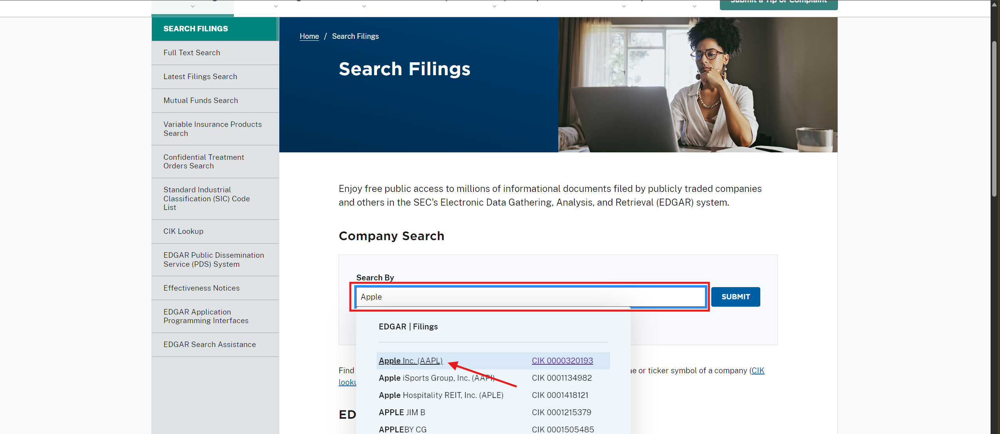
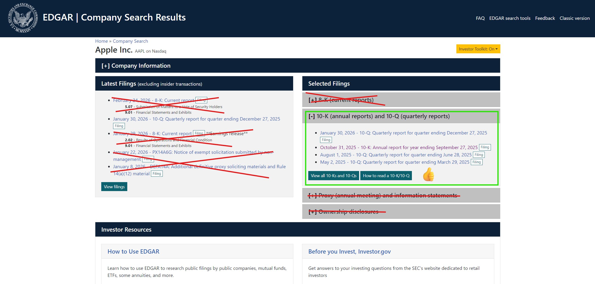
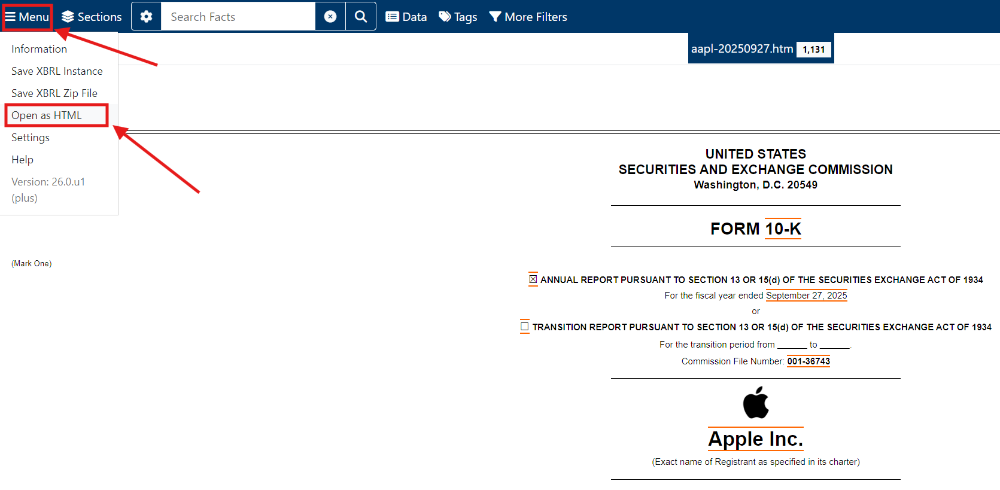
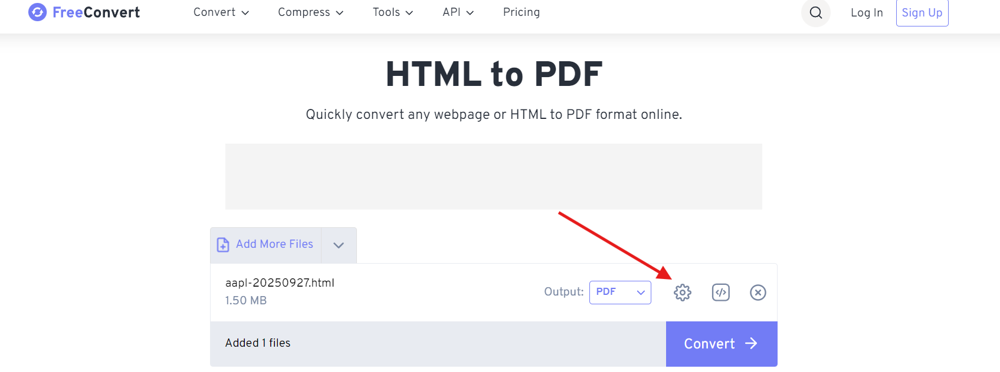
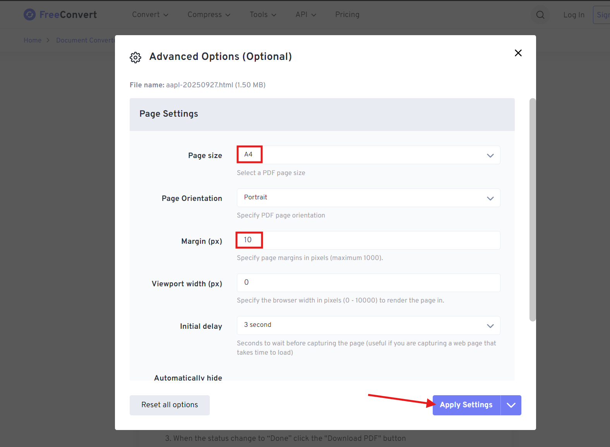

PROJECT OVERVIEW
Welcome to project Midas!
The goal of this project is to create a Golden Dataset that will be used to evaluate how well models perform on answering document-based questions.
Your goal in this task is to write a factual, finance-related prompt based on a 10-K/10-Q SEC filing from a pre-assigned company, answer the prompt you've created and write the supporting facts from the document. A typical project workflow will be:
- Select a company that belongs to your pre-assigned industry segment
- Select ONE 10-K OR 10-Q from the company you chose and download it and upload it here.
- Write a Factual Prompt whose answer MUST be present in the document. Depending on the type of prompt you were assigned, it can be:
- Simple Prompt: a simple question that can be directly extracted from the document.
- Complex Prompt: a complex question that involves logical reasoning, computing numbers, etc.
- Write a Perfect Answer that addresses your prompt
- Write all the Supporting Facts that were used to write your Perfect Answer and their full Location in the document.
- Write a Rationale to provide all steps taken to get to your Perfect Answer.
Detailed instructions for each step of the tasks will be provided below. If this is your first time working on this project, you MUST READ THROUGH ALL THE INSTRUCTIONS carefully. Quality is the most important aspect of this project, and you may log the time taken to understand the task, so please read all the instructions. Submitting low-quality tasks or failing to follow instructions is grounds for removal from this project!
GROUND RULES
NO EXTERNAL LLM IS ALLOWED to assist, assist with or generate ANY portion of this task. Do not use any LLMs or chatbot tools (e.g., ChatGPT, Gemini, Claude, Perplexity, local LLMs, etc) to help you. If we wanted LLM-generated content we wouldn't be asking you to work on this task in the first place. We value your expertise and careful work in developing high-quality prompt-response pairs!
Any LLM usage is grounds for removal from this project AND from DataAnnotation. We have ways to detect this; it's not worth the risk!
VERY IMPORTANT: ONLY USE SEC FILINGS PUBLISHED FROM OCTOBER 2023 OR MORE RECENT.
DO NOT INCLUDE ANY PERSONALLY IDENTIFIABLE INFORMATION (PII) in ANY portion of your Prompt or Answer. SEC filings are public, heavily regulated documents that intentionally disclose the names, salaries, and backgrounds of top executives. Therefore, not all names are considered prohibited PII. The goal of this PII restriction is to prevent the AI from memorizing and later generating sensitive personal data of ordinary individuals or private contact information. Here is a breakdown of what's allowed or not:
❌ STRICTLY PROHIBITED (Treat as PII)
- Direct email addresses (e.g., "j.smith@company.com")
- Direct phone numbers or personal extensions
- Home addresses or private physical locations (even if tangentially mentioned in legal proceedings)
- Names of ordinary employees, middle managers, or rank-and-file workers.
- Names of whistleblowers or plaintiffs in HR-related lawsuits against the company.
- Names of individual retail investors mentioned in proxy contexts or minority shareholder lawsuits.
- Account numbers, Social Security Numbers (SSN), or tax IDs (which should never be in a 10-K anyway, but sometimes leak in attached exhibits).
- Specific medical conditions or health statuses of executives (e.g., if a CEO takes a leave of absence and the 10-K names the specific illness).
- Details about an executive's family members (spouses, children) sometimes mentioned in related-party transaction disclosures.
✅ PERMITTED (Do NOT Treat as PII)
Because this is a financial analysis project, restricting all names would make the dataset useless. You are allowed to use the following, as they are public, material facts to the business:
- Names of the CEO, CFO, COO, CTO, etc. (e.g., Tim Cook, Satya Nadella).
- Names of the Board of Directors.
- Salaries, stock options, and bonuses of the named executive officers (NEOs) explicitly detailed in the filing.
- Names of external auditing firms (e.g., PwC, Deloitte).
- Names of major institutional shareholders (e.g., Vanguard, BlackRock) or partner companies.
- General corporate contact information (e.g., the company's main HQ address or the generic investor_relations@company.com inbox).
WRITING FACTUAL PROMPTS
A good prompt is the heart of this project, so let's make sure yours is built to last! The goal here is to write the kind of finance-related rigorous question that a real analyst would ask before or while reviewing an SEC filing. It must be atomic, specific, grounded in the document, and with one clear correct answer (the Ground Truth).
Before we dive into the specifics, here are the rules that apply no matter what type of prompt you were assigned:
Your prompt MUST:
- Be atomic. This means your prompt must contain a SINGLE question only.
- Be strictly financial or accounting-based. Focus on revenues, margins, cash flows, debt structures, asset turnover, tax reconciliations, company/segment performance, not on opinions.
- Be natural and realistic, as if you were asking a question to a fellow finance analyst.
- Be grounded in the document, answerable using ONLY the SEC document you uploaded.
- Be factual, i.e., ask for factual financial data, such as numbers, percentages, or accounting policies.
- Be specific enough that there is only one correct mathematical or accounting answer. Do not ask vague questions, such as "How did the company's finances perform?"
Your prompt MUST NOT:
- Focus on non-financial trivia (e.g., "How many employees does the company have?", "Where is the headquarters located?", or "Who is the CEO?" - these do not test the AI's financial reasoning).
- Ask for investment advice or stock predictions or opinion (e.g., "Is this company a good buy based on its P/E ratio?").
- Be answerable from general financial knowledge alone without reading the filing. (e.g., "What is the formula for Free Cash Flow?").
- Target any images. They must only target selectable texts, tables, paragraphs, etc.
- Include any personally identifiable information (PII). If your Supporting Facts somehow references a PII, you need to redact it. For example, if a citation includes a specific employee lawsuit, use placeholders like [Employee Name]. We highly recommend avoiding this situation, though!
This is especially important: UNDER ANY CIRCUMSTANCES, DO NOT RE-USE PROMPTS. The purpose of this project is to create a high-quality DIVERSE dataset, so submissions from the same worker where the prompts are equal or very similar will be flagged as BAD and you will be removed from the project.
There are two types of prompts you might be assigned: Simple Prompts and Complex Prompts. Your prompt must match the requirements of the one you were assigned. Carefully read the section below to better understand the difference between them.
SIMPLE PROMPTS
A Simple Prompt is a financial question whose answer can be extracted directly from one specific location in the document, like an information-retrieval task. For instance, it could be the information contained in one table cell, one line item, one footnote, or a financial conclusion, etc. It must not require any math or calculation to be answered; it is a test of finding the exact right number in a dense financial report.
What makes a great Simple Prompt?
A great Simple Prompt targets financial items that require navigating past the cover page and into the core financial statements (Balance Sheet, Income Statement, Cash Flow) or the Management's Discussion and Analysis (MD&A). Look for:
- Specific line items buried in tables (e.g., Amortization of intangible assets, specific debt maturities).
- Segment-specific financial data (e.g., revenue for a specific product line, not just total revenue).
- Disclosed financial risk figures (e.g., the exact dollar amount of foreign exchange headwinds reported).
The Retrieval Test: After writing your question, test yourself: could you point to a single number or highlight a single passage in the PDF that answers it without any calculation? If yes, you have a great Simple Prompt!
COMPLEX PROMPTS
A Complex Prompt is a question that cannot be answered by finding a single sentence or table cell. Instead, the answer to this question MUST satisfy ONE OR MORE of the following conditions:
- Computing a number that is not explicitly stated (e.g., calculating a margin, a growth rate, a ratio)
- Combining information from multiple sections of the same document (e.g., using a number from a table on page 40 and a footnote clarification on page 43)
- Applying financial domain knowledge to interpret the data (e.g., "exclude a one-time charge" from a loss)
What makes a great Complex Prompt?
A great Complex Prompt has a clear, singular correct answer, but requires genuine analytical effort to get there. The ideal question is one where a smart person without financial training would struggle, but a trained financial professional would solve it methodically.
The complexity test: Before submitting a Complex Prompt, ask yourself:
- Does answering this require reading at least two different parts of the document?
- Does it require performing a calculation that isn't already stated in the document?
- Would a financial professional get this right while a non-specialist might make a mistake?
If you answered yes to at least two of these three, that's a top-tier Complex Prompt!
PROMPT EXAMPLES
The table below contains some examples of good and bad prompts for each category. Feel free to refer to them before you write your prompt or whenever you are unsure whether your prompt fits the project's criteria:
| Category & Definition | X BAD Examples (Why they fail) | GOOD Examples (Why they work) |
|---|---|---|
| Simple Prompts Extracting a single, specific fact or number directly from one place in the document. No math required. |
1. "What does Microsoft do to make money?" (Too vague, asks for general summary instead of a fact). 2. "Was Pfizer sued recently?" (Lazy Yes/No question; doesn't test the AI's ability to find financial data). 3. "Does Tesla spend a lot on R&D?" ("A lot" is subjective and cannot be factually measured). |
1. "Based on Microsoft's FY2023 10-K, what was the exact total revenue generated by the 'Intelligent Cloud' segment?" (Targets a specific, indisputable number found in one table). 2. "According to Pfizer's FY2023 10-K, what was the exact dollar amount recorded as a litigation settlement charge in the third quarter?" (Pinpoints a specific legal disclosure). 3. "What was Tesla's total Research and Development (R&D) expense for the fiscal year 2023?" (Simple, direct extraction of a specific line item). |
| Complex Prompts Requires combining facts from multiple paragraphs in the same document, inferring context, or doing math. |
1. "What was Microsoft's cloud revenue, and what was their cloud cost?" (This is just two Simple Prompts glued together. No math or reasoning required). 2. "How much did Pfizer make in revenue and how much did they pay for lawsuits?" (Compound question that asks two unrelated simple things). 3. "How many employees does Tesla have and what is their R&D expense?" (Again, just extracting two separate things without connecting them logically). |
1. "Based on Microsoft's FY2023 10-K, what was the Gross Profit Margin percentage for the 'Intelligent Cloud' segment?" (Requires finding revenue and cost, then applying the gross margin formula). 2. "If you exclude the Q3 litigation settlement charge from Pfizer's FY2023 operating expenses, what would their Adjusted Operating Margin have been?" (Requires finding the charge, mathematically removing it from expenses, and recalculating the margin). 3. "Based on the FY2023 10-K, what was Tesla's average R&D expenditure per full-time employee?" (You need to find the R&D total, find the total headcount, and divide them). |
WRITING PERFECT ANSWERS
Alright! Now that you have a Perfect Prompt, it's time to write the Perfect Answer. Think of this as the ultimate "answer key". In the future, this exact text will be used as the Ground Truth for other raters to evaluate whether the model's answer is correct or not.
Your answer should be exactly how you would want a highly competent fellow financial analyst to reply to your question.
What makes a Perfect Answer?
- Be direct and concise
Answer the question immediately. Do not add conversational fluff, filler words, or extra information that the prompt didn't ask for. If the prompt asks for revenue, do not include in your answer the net income just because it was in the same table!
❌ Bad: "Well, according to the table on page 42 of the document, the total revenue was $45 million, and they also had $10 million in operating expenses which is interesting." (Too conversational, includes unnecessary extra facts).
✅ Good: "The total revenue was $45 million." - Use full sentences
While we want you to be concise, the answer must still be a complete, readable sentence. A reader should know exactly what the answer means without needing to look back at the prompt (it must be self-contained!). A good way to validate this is to pretend you are someone who doesn't know what the prompt is and see if you could guess it by only looking at your response.
❌ Too brief: "45.2%."
✅ Self-Contained: "The Gross Profit Margin for the Intelligent Cloud segment was 45.2%." - Be fanatical about units and formats
SEC filings love to play tricks with units (e.g., writing "45" at the top of a table that says in millions). Your Perfect Answer must state the true number with absolute clarity.
❌ Bad: "The revenue was 45." (45 what? Dollars? Apples?)
✅ Good: "The total revenue was $45 million." (or $45,000,000). - Always specify the relevant period explicitly
SEC filings compare multiple years of data (e.g., a 2023 10-K will also show 2022 and 2021 numbers). Even if your prompt mentions the year, your Perfect Answer must explicitly restate the specific year, quarter, or date the data belongs to. This prevents the answer from becoming factually incorrect if read out of context (once again, it must be self-contained!).
❌ Bad: "The total R&D expense was $3.2 billion." (For which year? 2023? 2022?)
✅ Good: "The total R&D expense for fiscal year 2023 was $3.2 billion." - Respect the PII Rules strictly
Remember the Ground Rules! If your answer involves a specific employee below the C-suite level or a private individual (like a whistleblower in a lawsuit mentioned in the 10-K), you must redact their name or avoid including it in the answer.
❌ Bad: "The company paid a $2M settlement to former HR manager John Merry."
✅ Good: "The company paid a $2M settlement to a former HR manager."
IMPORTANT: By convention, for this project, any percentage data rounded to one decimal place, and monetary figures must be rounded to the nearest integer.
PROMPT EXAMPLES
The following table has some PERFECT and BAD answers. We recommend that you always consult this reference table before building your answer.
| Prompt Type | The Question | X BAD Answers (Why they fail) | PERFECT Answers (Why they work) |
|---|---|---|---|
| Simple Prompt | "Based on Microsoft's FY2023 10-K, what was the exact total revenue generated by the 'Intelligent Cloud' segment?" |
"$87.9 billion." (Fails: Not a complete sentence). "It was $87.9 billion, and the gaming segment made $15 billion." (Fails: Gives extra info not asked for). |
"The total revenue generated by the Intelligent Cloud segment in FY2023 was $87.9 billion." (Works: Complete, direct, and includes the correct financial unit). |
| Complex Prompt | "If you exclude the Q3 litigation settlement charge from Pfizer's FY2023 operating expenses, what would their Adjusted Operating Margin have been?" |
"If you take the $12B revenue and divide it by the adjusted loss, it's 24%." (Fails: Do not put your math scratchpad in the final answer). "Based on my analysis of the SEC filing, I believe the margin is around 24%." (Fails: Too conversational and subjective). |
"Excluding the Q3 litigation settlement charge, Pfizer's Adjusted Operating Margin for FY2023 would have been 24.0%." (Works: Clean, professional, and states the final calculated number clearly). |
It is worth noting that you will show your mathematical work (for Complex Prompts) and cite your evidence in the upcoming Supporting Facts and Rationale sections. The Answer box is just for the final response (the Ground Truth)!
HOW TO PROVIDE SUPPORTING FACTS
In the future, other raters will need to verify your answer WITHOUT HAVING TO READ THE ENTIRE SEC filing from scratch. Your Supporting Facts are the only available information they will get. If you don't provide the Supporting Facts, the rater will not be able to fulfill their task!
In the task workflow, you will see a specific form to fill out for each fact you need to prove your answer. You can add as many facts as you need by clicking the "Add" button. You will always need to fill the following fields:
- Evidence (Verbatim Copy-Paste Only!)
This is the most important rule in the entire project. You must highlight the exact text in the PDF; press Ctrl+C, and paste it into this box. Do not summarize it. Do not change the wording. If the text has a typo in the original SEC filing, leave the typo in!
Why? Because AI models are evaluated on their ability to find exact text spans. If you paraphrase the evidence, the AI will fail the test because it can't find your version of the sentence in the document.
TABLE EXCEPTION: If you are pulling a number from a heavily formatted table, it can look messy when pasted. It's okay to use brackets "[]" to add the column header context along with the verbatim row content, so that it makes sense. Example: "iPad 28,023 5% 26,694 (6)% 28,300 [Product, 2025, Change, 2024, Change, 2023]".
Note that anything outside the "[]" is verbatim, with no changes (no added commas, paraphrasing or formatting; it must appear exactly as it does in the original PDF). - Page Number
Simply type the page number where you found the evidence.
IMPORTANT: Use the actual printed page number on the document itself, not the PDF viewer page number! - Page Section
SEC filings are organized by "Items". Tell us exactly which section the fact lives in. For example: "Item 7. Management's Discussion and Analysis", "Item 1A. Risk Factors", or "Notes to Consolidated Financial Statements". - Element Type
You will select the format of the text you extracted from a dropdown list. Please choose the most accurate option:- Paragraph: Standard text within the document.
- Table: A structured data presentation using a grid format.
- Footnote: The small print usually found directly beneath a table or page, explaining a specific number or anomaly (Pay close attention to these, they usually hold interesting facts!).
- Heading / Subheading: A section title.
- List / Bullet Points: A formatted list of items.
IMPORTANT: The amount of Supporting Facts will depend directly on the complexity of your prompts. If you received a Simple Prompt task, it will likely require a SINGLE Supporting Fact; If you received a Complex Prompt, you will NECESSARILY have 2 or more Supporting Facts. Remember, you need to state EVERY SINGLE piece of information needed to answer your Prompt without depending on the document.
EXAMPLE OF A PERFECT SUPPORTING FACT FILLING
Your Prompt:
"Based on Apple's FY2025 10-K, what was the average annual revenue generated by the iPad segment over the three-year period from 2023 to 2025?"
Your Answer:
"The average annual revenue generated by the iPad segment from 2023 to 2025 was $27,672 million."
Supporting Facts Form:
FACT 1 (Proving the 3-Year Data)
Evidence: "iPad 28,023 5% 26,694 (6)% 28,300 [Product, 2025, Change, 2024, Change, 2023]"
(Notice what the worker did here! They copy-pasted the exact, messy string of text as it came out of the PDF: iPad 28,023 5% 26,694 (6)% 28,300. Then, they added brackets [] at the end containing the column headers in the exact order they appear in the table.)
Page Number: 24
Page Section: Item 7. Management's Discussion and Analysis (Net Sales by Product)
Element Type: Table
Though this is a Complex Prompt (it needs to calculate an average based on several values), note how the worker only needed to pull ONE row from the Net Sales table to include all numbers in a single evidence. This is OK. Also, note how the PDF copy-paste is messy and to clarify this they use brackets to map the column headers to the numbers in the exact order data points are shown.
WRITING YOUR RATIONALES
If you are working on a Simple Prompt, you can skip this section entirely! Leave the Rationale box blank.
If you are working on a Complex Prompt, this is where you will learn about rationales!
The Rationale is the step-by-step logic that connects your raw Supporting Facts to your Perfect Answer. Why do we need this? Because if your Perfect Answer is "24.5%", and your facts are just the numbers $100M and $24.5M, a rater needs to know how exactly you arrived at that percentage. We cannot guess your math! The basic rules of rationale writing are stated below.
- Spell Out the Formula
Do not assume the reviewer knows the exact financial formula you are using. Different companies sometimes calculate things like "Free Cash Flow" or "Adjusted Margin" slightly differently. Always write out the formula in plain English before plugging the numbers in.
❌ Bad: "I divided 100 by 400 to get 25%." (Divided what by what?)
✅ Good: "Gross Margin = (Total Revenue - Cost of Revenue) / Total Revenue." - Show the Step-by-Step Math (Including Conversions)
You must write down the actual arithmetic. The most common mistake we see is people misplacing decimals because SEC filings report in millions or thousands. If you had to convert units or move a decimal point to get a percentage, show it!
❌ Bad: "24,500 / 100,000 = 24.5%."
✅ Good: "Step 1: 24,500 (Cost) / 100,000 (Revenue) = 0.245. Step 2: Convert to percentage = 24.5%" - Explain the "Why" (The Hidden Logic)
Complex Prompts usually have a "trick", like excluding a one-time charge, or finding a number buried in a footnote. Your rationale must explicitly state why you chose the numbers you did. Explain your logic as if you are training a junior analyst on their first day.
❌ Bad: "I took the loss of -$3,690 and added $350. Then divided by $1,700." (Why did you add $350? A reviewer won't know unless they memorize the document!)
✅ Good: "Because the prompt asked for the 'Adjusted' Operating Margin, I had to remove the one-time $350M restructuring charge (found in Fact 3). To remove an expense from an operating loss, you must mathematically add it back to the bottom line: -$3,690 + 350 = -$3,340."
EXAMPLE OF A PERFECT TASK
Let's take a look at how this all comes together!
Your Prompt:
"Based on the FY2023 10-K, what was Tesla's average Research and Development (R&D) expenditure per full-time employee?"
Your Answer:
"Tesla's average R&D expenditure per full-time employee in FY2023 was $28,219."
Suppose your Supporting Facts would have captured the $3.96B R&D expense (Fact 1) and the 140,473 employee count (Fact 2). Here's how your Rationale would look:
Goal: Find the average R&D spend per employee.
Formula: Total R&D Expense / Total Number of Employees.
Logic & Math:
From Fact 1, I found the Total R&D Expense is $3,964 million.
From Fact 2, I found the total employee headcount is 140,473.
Since the R&D expense is reported in millions, I first need to convert it to actual dollars to divide it by the exact employee headcount. $3,964 million = $3,964,000,000.
Math: $3,964,000,000 / 140,473 employees = 28,218.946...
I rounded this to the nearest whole dollar: $28,219."
TIME TO START YOUR TASK!
That's it! You are now ready to produce high-quality Factual Prompts, Perfect Answers, Supporting Facts and great Rationales! Your task assignment starts in the top-right corner of this page!
If you have any questions during this task, you may use the Project Chat at the bottom of this page, where Admins can respond promptly.
Thanks for your hard work!
ASSIGNED TASK
- Your pre-assigned prompt type is: Complex Prompt
- Your pre-assigned company is: Apple Inc.
- Required Filing Type: 10-K or 10-Q
- Allowed Timeframe: Filings published in or after October 2023.
Incorrect prompt types or companies is grounds for removal from this project, so please, make sure to respect ALL of your assignments.
STEP 1 - GET SEC FILING URL
- To download your PDF, firstly, you must access the SEC website which is https://www.sec.gov/edgar/searchedgar/companysearch
- Search for your Pre-assigned company, Apple Inc Apple Inc.
- Select one 10-K or 10-Q report of your choice that is published in or after October 2023.
- Click "Menu" on the SEC page > Click "Open as HTML" and copy the URL (you will need to paste this in the form below!).



STEP 2 - GET SEC FILING PDF FILE
In order to convert the html page to a PDF file, you will need to download the HTML page, use an external tool to convert it to PDF and then upload it here. The steps are detailed below:
- Right-click anywhere on the page of the HTML SEC page you got the URL from in the prior step > Click on "Save as" > Choose a file name and click "save".
- Now, open this external tool link: https://www.freeconvert.com/html-to-pdf
- Click "Choose file" and select the HTML you saved on step 1.
- Click on the gear icon and select the same options as below
- Then, click "Convert" > Click Download


STEP 3 - WRITE YOUR PROMPT!
Your Assignment: Complex Prompt
Time to put your analyst hat on! Your goal is to write a single, complex factual financial question based on the document you just uploaded.
A great Complex Prompt is one whose answer requires using multiple sections or paragraphs from the report, or requires inferring information or computing numbers not readily available in the report
Remember: A great Complex Prompt is one where a smart person without financial training might struggle, but a trained analyst would solve it methodically!
Quick Check: Does your Complex Prompt pass these questions?
- It requires synthesis or math: The answer cannot just be copied from a single sentence or table cell. It must require the reader to calculate a number (like a margin or ratio), combine facts from multiple paragraphs, or apply financial logic.
- It has only one correct answer: Avoid asking for opinions, predictions, or "why" something happened unless the document explicitly states the reason.
- It is entirely self-contained: Do not reference outside news, stock prices, or other companies.
- NO PII: Do not include the names of any non-executive employees or private individuals. If so, you are ready to move to the next step!
STEP 4 - WRITE A PERFECT ANSWER TO YOUR PROMPT!
Remember: this is the ultimate "answer key" that AI models will be judged against. Write the exact, final answer to the prompt you just created.
Your answer should be exactly how you would want a highly competent fellow financial analyst to reply to your question.
Quick Check: Is your Answer truly "Perfect"?
- It is a complete, standalone sentence: The reader should understand the answer without needing to re-read your prompt.
- It is direct and concise: State the final number or fact immediately. Do not add conversational fluff or extra data that wasn't asked for.
- The units and dates are exact: If the number is in millions, state the unit explicitly! Also, always explicitly state the year and/or quarter you are referencing in your answer.
- NO Math: Do not show your calculations or cite the page number in this box. (You will do that in the Rationale and Supporting Facts sections next!).
- NO Copy-Pasting: Write the answer in your own natural words. Do not paste a long, cumbersome legal paragraph from the SEC filing here.
STEP 5 - ADD YOUR SUPPORTING FACTS
Time to provide the evidence! If you are working on a Complex Prompt, you will likely need to add at least two or more facts to prove where you found your raw numbers before you did any math. If it's a Simple Prompt, you should need only ONE! If you feel otherwise, you probably didn't match your prompt type. Please review your prompt!
Remember! The rater will not have access to the document you uploaded here, so you need to provide ALL supporting facts!
(Click "+ Add" to open a new section for each separate piece of evidence you used).
Fact 1
Quick Check: Are your Facts formatted correctly?
- 100% Verbatim: You must highlight, copy, and paste the exact text or table data directly from the PDF. Do not paraphrase.
- Use brackets "[]" for messy tables: If you copy a row from a table, you can add context (header names, etc) in brackets so the rater knows what the number means. (e.g., "Revenue [for the year ended Dec 31, 2023]: $45,000").
- Catch the footnotes: If your answer relies on an adjusted metric or special condition, make sure to add the footnote as its own separate Supporting Fact.
STEP 6 - WRITE YOUR RATIONALE!
If you are working on a Complex Prompt, you must explain the step-by-step logic that connects your raw Supporting Facts to your final Perfect Answer. If you are working on a Simple Prompt, you don't need to write anything.
Remember: Write this as if you are training a junior analyst on their first day. The rater can't guess your math!
Quick Check: Does your Rationale show all your work?
- Spell out the formula: Write down the exact financial formula you used (e.g., Gross Margin = (Revenue - Cost of Revenue) / Revenue).
- Show the arithmetic: Write out the math step-by-step. If you had to convert numbers from "thousands" to actual dollars, show that conversion.
- Explain the "Why": If you had to exclude a one-time charge or pull a number from a hidden footnote, explain why you made that analytical choice.
STEP 7 - THAT'S IT!
Before you submit your task, please, take your time to double-check all previous answers. If everything is correct you can finish your task!
Thanks for your dedicated work